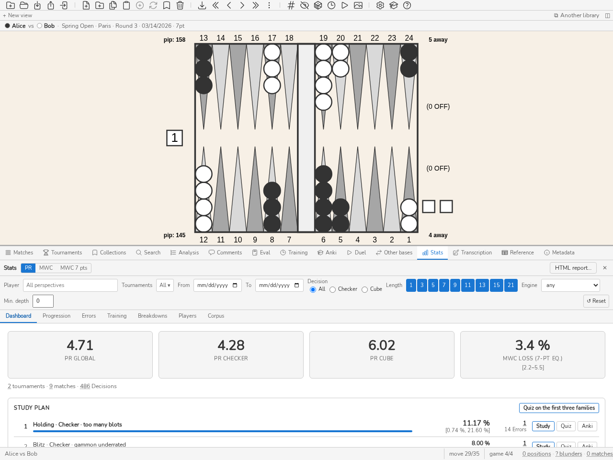
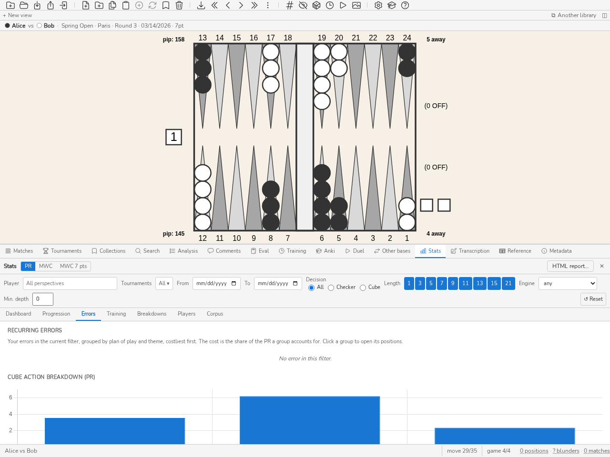

Statistiche
Pannello Stats
Introduzione
Il pannello Stats permette di analizzare il proprio livello di gioco e di seguire la propria progressione nel tempo a partire dalle posizioni importate nel database. Calcola e visualizza gli indicatori PR (Performance Rating) e MWC cost (Match Winning Chance cost) per l’insieme delle posizioni o per un sottoinsieme filtrato.
Il pannello Stats è particolarmente utile per:
collocare il proprio livello rispetto alle fasce di livello (Classe mondiale, Esperto, Avanzato…) grazie al PR globale;
seguire la propria progressione torneo dopo torneo o match dopo match grazie ai grafici della scheda Progressione;
individuare i propri punti deboli: la scheda Errori mostra la ripartizione tra mosse di pedine e decisioni di cubo e la distribuzione delle magnitudo d’errore;
confrontare fra loro i giocatori del database, una riga per giocatore, grazie alla scheda Giocatori — utile per seguire un’intera competizione;
accedere direttamente alle posizioni interessate cliccando su qualsiasi indicatore (drill-down).
La definizione, la formula, l’incertezza e i limiti di ogni cifra del pannello sono riuniti in Metriche e strumenti di studio.
Apertura del pannello
Per aprire il pannello Stats:
Premere CTRL-D.
Digitare il comando
statsostnella riga di comando.
Nota
Il pannello si aggiorna automaticamente a ogni modifica del filtro. Non ricalcola le statistiche in caso di semplice passaggio PR ↔ MWC: entrambe le metriche vengono calcolate simultaneamente dal backend.
Barra dei filtri
La barra dei filtri, in alto nel pannello, permette di limitare il calcolo a un sottoinsieme di posizioni.
Prospettiva del giocatore
Il campo Giocatore filtra le statistiche in base al giocatore analizzato. Digitando alcune lettere l’elenco si riduce ai nomi che le contengono; un clic o Invio sceglie il giocatore, ✕ o un campo svuotato torna a tutte le prospettive.
Il filtro è uno solo per tutte le schede del pannello e viene conservato da una sessione all’altra. Si imposta anche dagli altri pannelli: il nome di un giocatore nell’intestazione di una partita o nella barra sopra la scacchiera apre tutte le sue statistiche (tornei e date vengono svuotati), e il pulsante Stats dell’intestazione di un torneo apre quelle dell’intero torneo (date svuotate, giocatore conservato). Una data di fine anteriore alla data di inizio viene rifiutata: il campo riprende la data applicata.
Filtri disponibili
Torneo(i) — restrizione a uno o più tornei. È possibile selezionare più tornei contemporaneamente.
Date — intervallo temporale (Da … A). Se viene indicata solo la data di inizio, vengono incluse le posizioni più recenti.
Tipo di decisione — Tutti / Mosse di pedine / Decisioni di cubo.
Lunghezza del match — restrizione a lunghezze di match specifiche (1, 3, 5, 7, 9, 11, 13, 15, 21 punti). È possibile combinare più lunghezze.
Motore e Profondità min. — conservare solo le decisioni analizzate da un dato motore, o ad almeno una data profondità, in ply. Il menu Motore propone i motori presenti nelle analisi del database (eXtreme Gammon, GNU Backgammon…).
Un pulsante ↺ Reimposta azzera tutti i filtri, tranne il giocatore.
Nota
I filtri vengono salvati nella configurazione di blunderDB (config.yaml) e ripristinati all’avvio successivo.
Commutazione PR / MWC
Il pulsante PR / MWC in alto nel pannello commuta la metrica visualizzata in tutte le schede.
PR (Performance Rating)
L’errore medio di equity per decisione contata, moltiplicato per 500 come fanno eXtreme Gammon e GNUbg: un PR di 5,0 equivale a 0,010 di equity persa per decisione, cioè 10 millipunti (mpt). La regola di conteggio esatta — quali decisioni entrano nel denominatore, come viene convertito il punteggio — è quella di PR (Performance Rating).
Le fasce di livello che il pannello disegna dietro la curva di progressione sono un riferimento indicativo proprio di blunderDB: nessuna pubblicazione fa autorità su queste soglie. Il limite superiore di ogni fascia è escluso: un PR di 4 è Avanzato, non Esperto.
Livello
PR
Classe mondiale
< 2
Esperto
2 – 4
Avanzato
4 – 6
Intermedio
6 – 9
Occasionale
9 – 12
Principiante
≥ 12
MWC cost (Match Winning Chance cost)
Probabilità cumulata di vittoria del match persa a causa degli errori, sull’insieme dei dati filtrato. Calcolata a partire dalla MET corrente del database, per impostazione predefinita la Kazaross-XG2 integrata in blunderDB. Un’analisi al punteggio di match calcolata con un’altra tabella è «MET diversa» e resta fuori dalle statistiche.
Attenzione
Il MWC cost non è applicabile alle posizioni money-game (senza posta di match). Queste posizioni sono escluse dal calcolo MWC. I valori MWC dipendono dalla MET utilizzata; non sono direttamente confrontabili tra software che usano MET diverse.
Perdita di MWC (eq. 7 punti)
La probabilità di vincere il match che un giocatore ha perso sull’insieme delle sue decisioni — pedine, cubo, accetto o rifiuto, con cubo — riportata a un match ai 7 punti. Per un match ai N punti in cui il giocatore ha perso L di MWC:
L₇ = L × √(7 / N)
Per un match ai 7 punti, è la perdita di MWC del match, quella che mostra eXtreme Gammon. La radice viene dal modello della formula FIBS: a parità di forza, la perdita di un giocatore cresce come la radice della lunghezza del match. 7 punti è la lunghezza di riferimento perché è la più comune nei tornei.
Si legge come la quota di match persa contro un giocatore perfetto: 12,3 % significa che, invece del 50 % di probabilità contro il motore, il giocatore ne aveva solo il 37,7 % in un match ai 7 punti. Il suggerimento a comparsa ne dà la lettura in Elo contro il motore, invertendo la formula FIBS: D = (2000 / √7) × log₁₀(q / (1 − q)), con q = 0,5 − L₇. Oltre una perdita del 49 %, la formula non ha più un valore finito: l’Elo mostrato è allora un massimo («≤»). Le due cifre ordinano i giocatori allo stesso modo.
Completa il PR senza sostituirlo: il PR divide gli errori per un numero di decisioni, e questo numero dipende da ciò che si conta come decisione (mosse forzate, decisioni di cubo ovvie). La perdita di MWC non conta alcuna decisione: ogni errore pesa quanto è costato al punteggio in cui è stato commesso.
Su più match (statistiche di un giocatore o di un torneo), le perdite e le radici delle lunghezze si sommano prima del rapporto: L₇ = √7 × ΣL / Σ√N. Un match ai 7 punti pesa quindi più di un match a 1 punto, e un solo match dà il proprio valore.
Una partita isolata è molto rumorosa: bastano pochi errori gravi per raddoppiarne il valore. Il badge e il bilancio della partita (bilancio della partita) danno l’intervallo al 95 % ricampionando le sue partite; un aggregato (statistiche di un giocatore o di un torneo) lo dà ricampionando i suoi match; senza filtro giocatore, i due lati di un match formano una sola unità, perché giocano le stesse posizioni. Servono almeno tre partite o tre match, e non devono dare tutti la stessa perdita: altrimenti non c’è intervallo. Una riga per match delle statistiche quindi non ne ha: è una sola unità. Non classificate i giocatori su un solo match.
Attenzione
Una partita money-game non ha una lunghezza di match: la perdita di MWC (eq. 7 punti) non vi è definita e il pannello lo indica invece di mostrare un numero. Come il costo MWC, dipende dalla MET.
La terza scelta del pulsante, MWC 7 pts, traccia questa perdita nella scheda Progressione, e la mostra sulle schede della dashboard e nel confronto pedine/cubo della scheda Errori, suddivisa in pedine e cubo sugli stessi match (le due parti si sommano). La classifica dei giocatori ha la sua colonna. I grafici senza equivalente a 7 punti (per azione di cubo) conservano il MWC cost.
La commutazione PR ↔ MWC è istantanea: non viene eseguito alcun ricalcolo da parte del backend.
Il rapporto HTML
Il pulsante Rapporto HTML nell’intestazione del pannello produce un documento autonomo: un solo file, senza immagini esterne, senza foglio di stile remoto, senza script. I diagrammi sono SVG in linea, disegnati dallo stesso rendering della dama a schermo, con la vostra tavolozza. Si apre in qualunque browser, viaggia per posta elettronica, e si stampa in PDF dal browser stesso — il che evita di imbarcare un generatore di PDF per produrre ciò che tutti hanno già.
Contiene gli indicatori del perimetro corrente (posizioni, incontri, decisioni contate, PR globale, pedine e cubo), poi le dieci decisioni più costose, ciascuna con il suo diagramma, il suo costo, l’incontro da cui viene e la mossa migliore quando un’analisi la fornisce.
Il documento è costruito dal motore, non dallo schermo: la riga di comando (stats report --html, vedi stats — Errori ricorrenti) e il demone HTTP (rotta stats.report) producono lo stesso rapporto, in una delle nove lingue dell’interfaccia. Solo l’applicazione grafica disegna i diagrammi con la tavolozza della scacchiera; le altre due usano la tavolozza predefinita.
Il rapporto porta il filtro corrente del pannello Stats. Un rapporto che non dichiara il proprio perimetro è un rapporto le cui cifre non vogliono dire nulla: regolate il filtro — un torneo, un intervallo di date, un giocatore — prima di produrlo.
Scheda Cruscotto
La scheda Cruscotto offre una vista sintetica degli indicatori chiave. Si legge dall’alto in basso: le schede di livello, poi ciò su cui si lavora (piano di studio, top blunder), poi le letture (PR mobile, prima/dopo lo studio, bias con segno). La spiegazione di ogni scheda è nel suggerimento del suo titolo.


La scheda Cruscotto: PR globale, PR pedine, PR cubo.
Schede di livello
Tre schede visualizzano il PR (o MWC) per:
PR Globale — tutte le decisioni (pedine + cubo);
PR pedine — solo decisioni sulle pedine;
PR Cubo — solo decisioni di cubo.
Cliccando su una scheda si caricano nel pannello di analisi le posizioni del sottoinsieme corrispondente (drill-down). Una quarta scheda, Perdita MWC (eq. 7 pt), fornisce questa perdita qualunque sia la scelta del pulsante PR / MWC, con il suo intervallo; non carica nulla.
Sotto le schede, la riga dei totali conta i tornei, le partite e le decisioni del filtro. Il numero di tornei apre questi tornei nel pannello Tornei: un torneo solo si apre direttamente; più tornei restringono l’elenco, che porta allora il pulsante « N tornei aperti dalle Statistiche × »: ripristina l’elenco completo.
Il numero di decisioni apre le loro posizioni; il numero di partite apre quelle partite nel pannello Partite, salvo quando è attivo un tipo di decisione o un filtro di provenienza: conta allora meno partite di quante ne aprirebbe l’elenco e resta un semplice numero.
Nota
Il numero totale di decisioni viene visualizzato in fondo a ciascuna scheda al passaggio del mouse.
Piano di studio
La scheda Piano di studio risponde a «che cosa devo lavorare adesso?». Gli errori ricorrenti (scheda Errori) dicono dove il filtro ha perso di più; non dicono dove lo studio rende di più. Una famiglia di posizioni davvero difficili costa cara a tutti, e tre errori non fanno una tendenza. Il piano corregge entrambe le cose.
Una famiglia è un gruppo di errori ricorrenti: un piano di gioco, una natura di decisione (pedine o cubo) e un tema. Gli errori senza tema non ne formano: non indicano nulla da studiare.
Ogni errore è quantificato in MWC, come nel pannello Match: la sua perdita ℓ e la sua difficoltà d, la perdita che un giocatore di riferimento avrebbe subito nella stessa posizione (vedere la difficoltà per decisione del pannello Match). Un errore in partita libera non ha MWC: viene solo contato, «non quantificato».
L”MWC recuperabile di una famiglia è la somma di ℓ − d sui suoi errori: la frequenza della famiglia moltiplicata per la sua perdita media oltre la difficoltà. È ciò che recupererebbe giocando quelle posizioni come il giocatore di riferimento. Una famiglia di errori evitabili sale, una famiglia di posizioni in cui tutti sbagliano scende.
L”intervallo al 95 % accompagna ogni cifra. Una famiglia entra nel piano a partire da 5 errori e da un intervallo interamente sopra lo zero; il piano è ordinato per il limite inferiore dell’intervallo, così che, a pari recuperabile, passi avanti la famiglia meglio accertata. Le altre sono nominate sotto l’elenco, da confermare, senza rango: il piano non la spinge verso il rumore. La stessa riga conta gli errori fuori piano (senza tema, non quantificati).
Ogni riga del piano mostra il suo rango, la famiglia, una barra la cui lunghezza è il suo MWC recuperabile rapportato a quello della prima, questo MWC con il suo intervallo e il numero di errori. Ogni conteggio di posizioni del piano (per famiglia, da confermare, fuori dal piano) è cliccabile: carica nell’elenco esattamente quelle posizioni.
Ogni famiglia propone tre azioni: Studiare apre la coda di studio sulle sue posizioni, lo scarto maggiore dal giocatore di riferimento per primo; Quiz avvia l’esercizio Decisione del pannello Allenamento su venti di esse; Anki ne fa un mazzo di carte. In cima alla scheda, Quiz sulle prime tre famiglie estrae venti posizioni da quelle delle tre famiglie di testa. Il piano segue il filtro del pannello: imposti il giocatore per ottenere il suo piano. Da riga di comando: blunderdb stats plan (vedere stats — Errori ricorrenti).
Prima/dopo lo studio
La scheda Prima/dopo lo studio chiude il cerchio del piano: ciò che hai lavorato ti costa meno nei match reali? Senza di essa, lo studio si giudica a sensazione; con essa, una famiglia che non si muove nonostante il lavoro dice che bisogna cambiare metodo, e una famiglia in progresso può cedere il suo posto nel piano.
Una famiglia (quella del piano) è studiata alla data della prima azione di studio su una delle sue posizioni: il segno «studiata» della coda di studio, un ripasso Anki, una risposta a un quiz. Creare una scheda o archiviare una posizione in una collezione non conta.
Per ogni famiglia studiata, la scheda confronta due finestre: i match giocati prima di quel giorno e quelli giocati dopo (il giorno stesso è escluso). In ciascuna, il tasso di perdita è l’MWC perso per gli errori della famiglia, rapportato a tutte le decisioni dello stesso piano di gioco e della stessa natura, e mostrato in punti di MWC ogni 100 decisioni.
Il guadagno è il tasso di prima meno quello di dopo, con il suo intervallo al 95 %. Il verdetto è «migliorato» (o «peggiorato») solo se ogni finestra conta almeno 30 decisioni e l’intervallo esclude lo zero; altrimenti resta «indeterminato» o «troppe poche decisioni».
Accanto a ogni finestra, la colonna Posizioni conta le posizioni distinte delle sue decisioni e le apre con un clic; il numero tra parentesi resta quello delle decisioni, denominatore del tasso.
È un cambiamento, non un effetto: una famiglia viene studiata perché costava, e una parte del guadagno è regressione verso la media; nulla controlla avversari, formato o dadi. Da riga di comando: blunderdb stats effect (vedere stats — Errori ricorrenti).
Bias con segno
La scheda Bias con segno dice in che direzione sbagli, non solo quanto. «Prendi troppo» si corregge meglio di un PR: la regola da rivedere è nominata. Ogni bias è la quota di decisioni errate in una direzione meno la quota errata nell’altra, con il suo intervallo al 95 %; una tendenza è nominata solo a partire da 20 decisioni e da un intervallo che esclude lo zero.
Presa / rifiuto — sulle risposte al cubo: prese errate (il bot rifiuta) meno rifiuti errati (il bot prende). È esattamente il tuo tasso di presa meno quello del bot sulle stesse posizioni.
Raddoppi — sulle decisioni di raddoppiare: raddoppi prematuri (il bot non raddoppia, o la posizione è troppo buona per raddoppiare) meno raddoppi mancati. Lo stesso bias è dato per punteggio (il tuo away, quello dell’avversario, un punteggio post-Crawford contato a 1 punto; la partita libera nella sua casella), per i punteggi che contano abbastanza decisioni.
Blot — sulle mosse di pedine con contatto: le mosse che lasciano più blot della mossa migliore meno quelle che ne lasciano meno. Una mossa è riconosciuta dalla tavola che lascia, comunque sia scritta («13/7(2)», «8/5*/4»); una mossa che il generatore di mosse ancora non sa rigiocare è scartata, e la quota delle mosse scartate è data sotto la tabella. Il bias conta i blot senza pesarne l’esposizione: un blot fuori portata conta quanto un blot esposto.
Accanto a ogni conteggio, il suo costo in millipunti dice se la tendenza costa; una posizione giocata in più match vi conta con la mossa giocata in ciascuno. I bias seguono il filtro del pannello. Da riga di comando: blunderdb stats biases (vedere stats — Errori ricorrenti).
Ogni conteggio di decisioni (tutte, in un senso, nell’altro) è seguito da una colonna Posizioni: le posizioni distinte di quelle decisioni, che un clic apre. Una posizione giocata in più match conta una decisione per match, ma una sola posizione.
PR mobile sulle ultime N decisioni
Una riga di valori PR (o MWC) calcolati sulle ultime N decisioni (N = 5, 10, 50, 100, 250, 500, 1000) permette di misurare la tendenza recente. I valori in grigio corrispondono a un N superiore al numero di decisioni disponibili.
Cliccando su un valore si caricano le ultime N posizioni corrispondenti.
Top blunder
L’elenco dei 10 errori peggiori (o MWC cost), ordinati per magnitudo decrescente. Cliccando su una riga si carica la posizione interessata nel pannello di analisi.
Scheda Progressione
La scheda Progressione presenta l’evoluzione del livello nel tempo.
In testa alla scheda, un obiettivo: «PR < 5 entro dodici settimane». Un traguardo, una scadenza, e una tendenza che dice dove si va — nulla di più. Un obiettivo che si mettesse a dare voti, a congratularsi o a ricordare sarebbe un’altra funzione, non questa.
Il pulsante Proporre suggerisce un traguardo a partire dal livello attuale: il limite inferiore della fascia in cui siete, cioè l’ingresso in quella successiva. Proporre «un po” meglio» non si ancorerebbe a nulla; proporre un gradino dice qualcosa — passare da intermedio ad avanzato si vede e si racconta.
La tendenza è un adattamento ai minimi quadrati sul PR dei vostri incontri, proiettato alla scadenza. Rifiuta di pronunciarsi sotto tre incontri: tracciare una retta fra due punti sarebbe un’affermazione insostenibile. E la frase lo dice ogni volta — una tendenza non è una previsione.
L’obiettivo è memorizzato nei metadati del database, non nella configurazione: riguarda quella biblioteca, quindi segue il file anziché la macchina. Nessun cambiamento di schema: metadata è già una tabella di chiavi e valori, leggibile da blunderdb info come dal demone.
Grafico a linee per torneo
Un grafico a linee mostra il PR (o MWC) di ogni torneo: un punto per torneo, etichettato con il suo nome, nell’ordine cronologico della sua data — in mancanza, quella della sua partita più vecchia (asse Y: valore della metrica). Delle bande colorate indicano le soglie di livello.
Cliccando su un punto del grafico si apre un menu contestuale con due opzioni:
Apri torneo — apre il torneo nel pannello Tornei.
Apri posizioni — carica tutte le posizioni del torneo nel pannello di analisi.
Scatter plot per match
Un grafico a dispersione rappresenta ogni partita (asse X: data, asse Y: PR o MWC). La dimensione del punto è proporzionale al numero di decisioni nella partita. Una partita senza data non compare.
Cliccando su un punto si apre un menu contestuale:
Apri partita — apre il match nel pannello Match.
Apri posizioni — carica tutte le posizioni del match nel pannello di analisi.
Scheda Errori
La scheda Errori scompone le fonti di errore.


La scheda Errori: ripartizione del PR per azione di cubo.
Errori ricorrenti
In cima alla scheda, una tabella raggruppa gli errori del filtro corrente — quindi quelli di un solo giocatore quando un giocatore è filtrato — per piano di gioco e per tema, il più costoso per primo. Risponde alla domanda «dove perdo di più?»: per esempio, «tenuta · troppi blot».
Un errore è una decisione conteggiata il cui costo raggiunge la soglia Errore della libreria.
Il piano di gioco è quello del giocatore di turno, così come lo presenta la scheda Ripartizioni.
Il tema di una mossa di pedine è quello nominato dalle regole della frase di spiegazione del pannello Analisi: gammon sottostimato, troppi blot, punto non fatto, troppo passivo. Quello di una decisione di cubo è il senso dell’errore, come nella direzione degli errori di cubo più sotto: raddoppio mancato, raddoppio prematuro, passo sbagliato, presa sbagliata.
Un errore che nessuna regola nomina con sicurezza non viene indovinato: esce dalla classifica e appare a parte, sotto la tabella, in una riga per piano di gioco (« senza tema identificato: N errori, costo X »), cliccabile anch’essa. Questo resto è spesso il più pesante, perché la spiegazione si pronuncia solo a partire da 60 mp, sopra la soglia Errore: classificato con gli altri, guiderebbe una tabella che non direbbe nulla.
Il costo è la quota del PR del filtro che il gruppo rappresenta: la formula del PR applicata agli errori del gruppo, rapportata a tutte le decisioni conteggiate. I costi dei gruppi non superano quindi mai il PR.
Facendo clic su un gruppo, o sul suo numero di errori, se ne caricano le posizioni, dalla più costosa alla meno costosa. Il tema viene ricalcolato a ogni visualizzazione e non è mai salvato: come il piano di gioco, è un’etichetta derivata, non modificabile. Da riga di comando: blunderdb stats recurring (vedi stats — Errori ricorrenti).
Ogni riga offre tre gesti per passare dall’errore allo studio: Quiz su questo gruppo avvia l’esercizio Decisione del pannello Allenamento sulle posizioni del gruppo, Mazzo Anki ne fa un mazzo di carte, Raccolta le archivia in una nuova raccolta. Sopra la tabella, Quiz sui miei tre gruppi peggiori estrae venti posizioni a caso tra quelle dei tre gruppi più costosi. Dalla riga di comando, stats recurring --quiz estrae queste posizioni e --deck crea il mazzo.
Ripartizione per azione di cubo
Un diagramma a barre visualizza il PR (o MWC) per ciascun tipo di decisione di cubo: NoDouble, DoubleTake, DoublePass, TooGood. Ogni barra indica inoltre il numero di decisioni e il tasso di blunder in un suggerimento.
Cliccando su una barra si caricano le posizioni corrispondenti a quell’azione di cubo, solo quelle con un errore (drill-down).
Direzione degli errori di cubo
La ripartizione qui sopra indica quanto costano le decisioni di cubo; questa tabella indica in quale senso sbagliano.
Una posizione di cubo porta due decisioni prese da due giocatori diversi, presentate qui in due righe:
Offrire — il giocatore che detiene il cubo raddoppia o no. I suoi errori sono i doppi mancati (bisognava raddoppiare) e i doppi prematuri (non bisognava).
Rispondere — il giocatore a cui il cubo viene offerto prende o passa. I suoi errori sono i pass errati (una presa corretta è stata passata) e le prese errate (un pass corretto è stato preso).
Le due righe restano separate di proposito: un giocatore può benissimo raddoppiare tardi e prendere largo, e un indicatore unico chiamerebbe ciò «equilibrato» perdendo entrambe le metà dell’informazione.
Ogni casella mostra il numero di decisioni; il tooltip dà l’equity perduta cumulata. Fare clic su una casella carica le posizioni corrispondenti. Una casella a zero non è cliccabile.
Nota
Questa tabella conta decisioni, non emette giudizi. A partire da quale scarto una tendenza meriti di essere nominata dipende dalla numerosità e da un punto di riferimento, che non sono dati del motore.
Confronto Checker / Cube
Un diagramma comparativo affianca il PR delle mosse di pedine e quello delle decisioni di cubo. Cliccando su una barra si caricano le posizioni del sottoinsieme con errore.
Istogramma delle magnitudo d’errore
Un istogramma distribuisce gli errori in base alla loro magnitudo in millesimi di punto (fasce: 0–5, 5–10, 10–25, 25–50, 50–100, ≥ 100). Cliccando su una barra si caricano le posizioni della fascia.
Allenamento nel tempo
La scheda Allenamento affianca, sulle stesse finestre di calendario — la settimana o il mese, a scelta — tre serie che misurano il progresso in tre modi:
il PR del quiz: quello delle sessioni dell’esercizio Decisione del pannello Allenamento, ponderato per il numero di decisioni giudicate. È calcolato sulla scala del PR reale, quindi è confrontabile con esso;
il PR delle partite del filtro corrente, ponderato per il numero di decisioni;
la ritenzione Anki: la quota di ripassi di carte già apprese valutati Difficile o meglio, letta sull’asse destro (in %).
Sotto il grafico, il PR del quiz per piano di gioco elenca le decisioni del quiz tratte da posizioni della libreria, i piani peggiori per primi, con il PR dell’ultima finestra in cui il piano è stato giocato.
Tra parentesi, il numero di decisioni o di ripassi dietro ogni valore: una finestra senza campioni non ha valore — un trattino, non uno zero. Il numero di decisioni di partite di una finestra apre le loro posizioni. Il filtro restringe solo le partite; il diario del quiz e quello di Anki sono vostri e non portano un giocatore. Non si registra nient’altro: le tre serie sono rilette dai diari esistenti. Da riga di comando: blunderdb stats training (vedi stats — Errori ricorrenti).
Scheda Ripartizioni
La scheda Ripartizioni divide le stesse decisioni che contano le cifre globali lungo quattro assi. Nessuno di essi ridefinisce cosa conta come decisione: sarebbe un secondo PR con lo stesso nome.
Per fase di gioco — apertura, mediogioco, corsa, uscita delle pedine. È ciò che risponde a «il mio PR in corsa contro il mio PR in contatto». L’etichetta è calcolata dalla tavola (vedi Pannello Ricerca); una base le cui fasi non sono mai state calcolate mette tutto sotto Non classificata, e
blunderdb repairla riempie.Per piano di gioco — corsa, blitz, ancora, backgame, blocco contro blocco… È la ripartizione per cui il classificatore esiste: «dove perdo di più?», piano per piano. La stessa etichetta derivata della fase, le stesse riserve, e
blunderdb repairla riempie allo stesso modo.Per etichetta — i
#parolascritti nei commenti. Una posizione può portarne più d’una: queste righe non sommano al totale, e il pannello lo dice sotto la tabella. Un’etichetta qualifica, non partiziona.Per punteggio — i punti mancanti a entrambi i campi, letti dal lato del giocatore di turno, quindi dal lato di chi decide. La riga Money è la partita a soldi. Una cella con meno di dieci decisioni è in grigio con il suo effettivo visibile invece che nascosta: troppo poco per essere letta, ma l’omissione resta verificabile.
Le colonne Posizioni e Errori gravi contano posizioni distinte, e ogni cifra è un link: un clic carica esattamente queste posizioni nel pannello di analisi, come i contatori della barra di stato. Errori gravi conta le posizioni in cui almeno una decisione è un errore grave. Una posizione giocata in più partite (un’apertura, per esempio) vi conta una sola volta; la colonna Decisioni la conta ogni volta, perché è il denominatore del PR.
Ogni riga porta il suo intervallo di confidenza al 95 % (colonna IC 95 %), che sostituisce la soglia fissa di dieci decisioni: dice quanto vale un PR, non solo quante decisioni lo sostengono. Ricampiona i match della selezione, non le decisioni né le partite: le partite di un match condividono avversario, sessione e stanchezza, e contarle come indipendenti darebbe un intervallo troppo stretto; senza filtro giocatore, i due posti di un match formano una sola unità. Una riga che poggia su meno di tre match, o i cui match danno tutti lo stesso PR, non ha intervallo ed è attenuata, anche con molte decisioni: due match non dicono nulla sulla dispersione, e match identici dicono che concordano, non che il PR sia esatto. Per lo studio: una famiglia di posizioni il cui intervallo resta sopra il vostro PR globale è una debolezza accertata; una riga con un intervallo ampio non giustifica ancora un piano di lavoro. Il PR globale della dashboard porta lo stesso intervallo, sotto la sua scheda.
Nota
Nella ripartizione per punteggio, un punteggio post-Crawford è letto come 1-away: la partita Crawford e le partite post-Crawford allo stesso punteggio finiscono nella stessa cella.
Studio e gioco reale
Il comando blunderdb list --type study --days 30 mette tre numeri uno accanto all’altro, piano per piano: quante posizioni distinte sono state ripassate nel periodo, quale era il PR prima, quale è il PR da allora.
Tre numeri, e nessun quarto. Non c’è colonna di guadagno né freccia, perché qui nulla controlla nulla: il giocatore può aver incontrato avversari più forti, cambiato formato, o semplicemente giocato più corse questo mese. L’accostamento è del lettore; una colonna che annunciasse un effetto affermerebbe una causalità che questi dati non portano. I numeri, invece, sono esatti.
I ripassi sono contati in posizioni distinte: una carta ripassata quattro volte nel mese è una posizione studiata, e contare le ripetizioni farebbe sembrare un mese di sgobbata un mese di copertura. Le decisioni del PR, invece, sono contate tutte — ciascuna è stata presa una volta. Un PR che poggia su meno di dieci decisioni mostra —, con il suo campione visibile accanto.
Scheda Giocatori
Le cinque schede precedenti descrivono un giocatore; la scheda Giocatori li confronta tutti. Mostra una riga per giocatore del database, il che risponde all’esigenza di un organizzatore che segue un’intera competizione anziché un giocatore in particolare.

La scheda Giocatori: una riga per giocatore, ordinabile per qualsiasi colonna.
Colonne, nell’ordine:
Colonna |
Significato |
|---|---|
Giocatore |
Il nome così come figura nei match. Un giocatore registrato con due grafie compare su due righe, a meno che una sia un alias dell’altra (sezione Corpus delle impostazioni): la riga porta allora il nome canonico. |
Match |
Numero di match disputati nel periodo considerato. |
V–S |
Vittorie e sconfitte. Un match incompiuto (registro troncato, abbandono) non conta né l’una né l’altra: V + S può quindi essere inferiore al numero di match. |
Decisioni |
Numero di decisioni conteggiate — il denominatore del PR. È la colonna che dice quanto valgono i tassi vicini: un PR calcolato su dodici decisioni non significa nulla. |
PR |
Performance Rating globale. |
PR pedine, PR cubo |
Il PR ripartito per tipo di decisione. |
Snowie |
Snowie Error Rate (vedere Appendice: modello statistico — allineamento XG / gnuBG / blunderDB). |
Blunder |
Numero di errori che raggiungono la soglia di blunder della libreria (0,100 EMG per impostazione predefinita). Un clic su questo numero carica quelle posizioni nel pannello di analisi. |
Fortuna |
Fortuna media per lancio, in millesimi di punto, con segno: positiva se i dadi sono stati favorevoli. |
Utilizzo:
Ordinare — fare clic su un’intestazione di colonna. La tabella si apre ordinata per PR crescente, con il miglior giocatore in testa, e conserva da una sessione all’altra l’ultimo ordinamento scelto. I giocatori di cui nulla è stato misurato restano in fondo qualunque sia il verso dell’ordinamento: uno zero per mancanza di dati non è una prestazione perfetta.
Filtrare per colonna — la riga di campi sotto le intestazioni filtra ogni colonna: un pezzo di nome per il testo, un limite per i numeri (
>=500,>500,<2.5,<=2), un intervallo (3-7) o un valore esatto (5). Un campo illeggibile è bordato di rosso e non filtra nulla; un valore mai misurato non supera alcun limite. I filtri di colonna durano per la sessione. La classifica dei giocatori si legge così: ordinamento per PR, colonna Decisioni filtrata con>=500. Tutte le tabelle del pannello Stats — ripartizioni, corpus, errori ricorrenti, tempo di riflessione, allenamento, bias, effetto dello studio — si ordinano e si filtrano allo stesso modo.Aprire il dettaglio di un giocatore — fare clic su una riga. Il giocatore viene selezionato nella barra dei filtri e la visualizzazione passa alla scheda Cruscotto.
Aprire le proprie decisioni — il numero di decisioni apre le loro posizioni, sotto i filtri della tabella. Il numero di partite e il bilancio V–S restano semplici numeri: contano anche le partite senza decisione analizzata, che nessun elenco di partite riproduce.
Restringere il periodo — i filtri di date, tornei e lunghezza dei match si applicano normalmente, il che consente di delimitare la tabella alle date di una competizione.
Confrontare due giocatori — spuntate la casella della prima colonna su due righe. Sopra la tabella compare un blocco che mette i loro indicatori a confronto; spuntare un terzo giocatore sostituisce il più vecchio dei due. La casella non seleziona la riga: spuntare confronta, cliccare apre il dettaglio.
Vedere le posizioni in cui uno ha giocato meglio — il pulsante del blocco di confronto elenca le posizioni che entrambi i giocatori hanno dovuto giocare e in cui uno ha giocato bene (sotto la soglia di Errore della biblioteca) e l’altro no, la differenza maggiore per prima; un giocatore è giudicato sulla sua peggiore giocata della posizione. Apri queste posizioni le carica nella vista di analisi. La riga di comando e il server danno lo stesso elenco (
stats contrast).Valutare prima le mosse — l’elenco confronta solo le mosse il cui errore è valutato, e nessuna importazione le valuta: la valutazione si fa su richiesta. Finché ne restano da valutare, il blocco ne indica il numero con un pulsante Valuta le mosse; la riga di comando fa lo stesso con
repair --move-errors.
In quel blocco solo i tassi ricevono un verdetto, e il migliore dei due è in grassetto. Tre indicatori non ne ricevono mai, e vale la pena dire perché. La fortuna non è una qualità: un giocatore più fortunato non è migliore. Partite, bilancio e decisioni dicono quanto valgono i tassi, ma metterli in competizione farebbe vincere chi ha semplicemente giocato di più. Il numero di blunder non si confronta grezzo — dodici su mille decisioni valgono più di dieci su cento —, perciò il blocco aggiunge una riga Blunder / 100 dec. che invece si confronta, e lascia il conteggio accanto come contesto.
Un pari non è una vittoria: non è messo in grassetto da nessuna parte. Un tasso senza nulla dietro si mostra come «—» e non decide nulla.
Nota
In questa scheda la scelta del tipo di decisione è disattivata: la tabella ripartisce già le decisioni di pedine e di cubo in colonne distinte. Il giocatore della barra dei filtri resta attivo: la tabella mostra sempre tutti i giocatori, e la riga di questo viene evidenziata e portata in vista.
Due viste di corpus figurano nella scheda Corpus del pannello, da riga di comando e tramite l’API del demone (vedi stats — Errori ricorrenti): il testa a testa di due giocatori (match in comune, PR di ciascuno, bilancio) e il PR per finestra di calendario scorrevole (1, 3, 6 o 12 mesi). La scheda Corpus calcola ogni vista su richiesta, sotto il filtro corrente. La classifica per PR si legge nella scheda Giocatori, ordinata per PR e filtrata sulla colonna Decisioni; la riga di comando e l’API la forniscono anch’esse (stats ranking). Un filtro di provenienza (campi Motore e Profondità min. della barra dei filtri) limita le statistiche alle decisioni analizzate così; riguarda ogni decisione, e le cifre che tocca sono allora ricalcolate dalle decisioni. Il testa a testa e il PR per finestra non lo accettano: finché è attivo, rifiutano di calcolarsi. Come il resto della barra, viene conservato da una sessione all’altra.
Nella scheda Corpus, ogni riga apre ciò che riassume. Il bilancio del testa a testa apre le sue partite nel pannello Partite, che mostra allora il pulsante «N partite aperte dalle Stats ×»: ripristina l’elenco completo; una riga di testa a testa apre la sua partita. Il primo giocatore del testa a testa è di partenza quello della barra dei filtri. Una riga di finestra e il suo numero di decisioni aprono le sue posizioni, il suo numero di partite apre le partite. Un conteggio di posizioni del pannello Stats, in qualunque scheda, esce prima dalla partita in corso prima di aprire il proprio elenco; il comando m riapre poi la partita alla mossa salvata.
Importante
Un trattino («—») segnala un valore mai misurato, da non confondere con zero. È in particolare il caso della colonna Fortuna per ogni match importato prima della versione 2.15.0 dello schema: la fortuna non veniva allora conservata, e nulla ne consente la ricostruzione a posteriori. Reimportare il file di origine non basta: l’importazione riconosce un duplicato e applica solo i contrassegni di studio appena attivati (il rapporto ne dà il numero). Occorre eliminare il match e poi reimportarlo. I formati che non la trasportano (BGF, Jellyfish .mat) non la forniranno mai.
Regola di aggregazione
Importante
Il PR di un torneo (o di un qualsiasi sottoinsieme) è calcolato con la regola somma/somma — mai come media dei PR individuali dei match.
Formula:
Esempio: un giocatore disputa due match in un torneo —
Match A: 10 decisioni, 0,100 di equità persa → PR = 5,0
Match B: 90 decisioni, 0,540 di equità persa → PR = 3,0
Media ingenua dei PR: (5,0 + 3,0) / 2 = 4,0 (errato)
Regola somma/somma: 500 × 0,640 / (10 + 90) = 3,2 (corretto)
La regola somma/somma è l’unica che gestisce correttamente la variazione di lunghezza dei match (un match a 21 punti pesa più di un match a 1 punto).
MWC: limitazioni
Per impostazione predefinita, il MWC cost è calcolato a partire dalla MET Kazaross-XG2, tabella di riferimento de facto nel backgammon competitivo. I risultati non sono direttamente confrontabili con software che usano altre MET. È la stessa tabella, letta dallo stesso punto d’ingresso, di quella di cui il valutatore integrato si serve per le sue decisioni di cubo al punteggio: le statistiche e il motore non possono divergere su questo punto. Fornisce i propri valori fino a 25 punti da fare per parte; oltre, è prolungata da una tabella di Zadeh calcolata come quella di GNUbg, fino a 64.
Le posizioni money-game (senza punteggio di match) sono escluse dal calcolo MWC. Se il database contiene molte posizioni money-game, il MWC cost potrebbe essere sottostimato o non disponibile.
Il MWC cost è cumulativo sull’intero set di dati filtrato — non è un indicatore per singola decisione. Misura l’impatto totale dei tuoi errori sulle tue probabilità di vittoria.